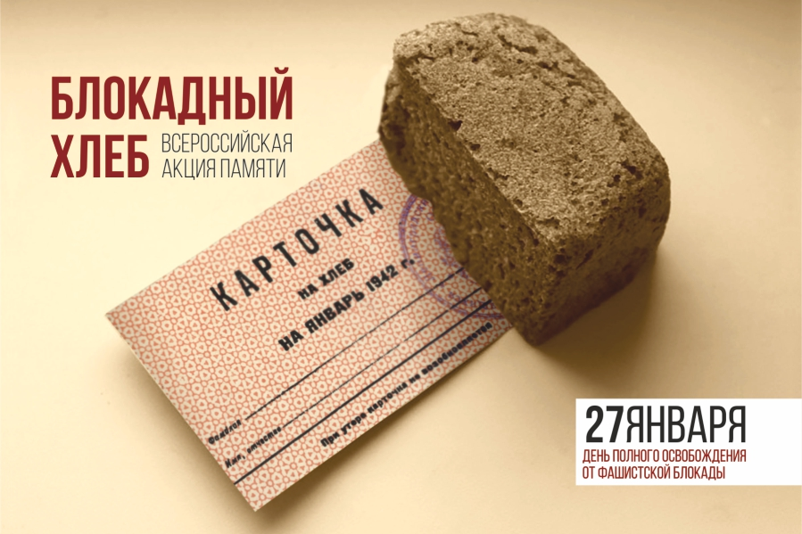

Акция "Блокадный хлеб"
27.01.2020
27 января в Городском Классическом Лицее прошло мероприятие, посвящённое освобождению Ленинграда от блокады 76 лет назад - "Блокадный хлеб". В классах прошли тематические классные часы, лицеистам рассказали о условиях, в которых жили люди того времени. Желающие могли пройти в 303 кабинет и попробовать хлеб по блокадному рецепту.
